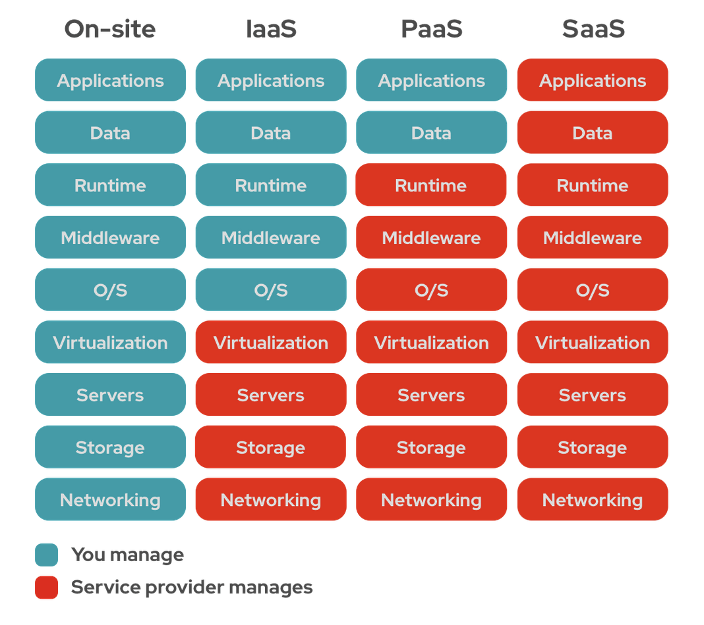

Let's start with some definitions!
Note: anything that is 'aaS' usually stands for “as a Service,” it usually involves cloud computing provided by a third party. You’ll see that trend in these definitions.
SaaS stands for 'Software as a Service.'' It is a software licensing and delivery model in which software is licensed under a subscription basis and is centrally hosted.
PaaS stands for 'Platform as a Service.' Platform as a service (PaaS) is a cloud computing model where a third-party provider delivers hardware and software tools to users over the internet. Users can access the platform's components for a recurring fee.
SaaS is usually a finished application which a client can use such as ADP's payroll/time management app, Netflix and their subscription-based streaming service, Slack's messaging service, and Amazon's subscription-based shopping service. The key difference is that SaaS offers a finished workload, while PaaS offers the tools needed to help a business create and manage it's own workload. Some examples of PaaS are Heroku, AWS Lambda, and Microsoft Azure.
Let's Look at a quick diagram of covered services for SaaS and PaaS, you can ignore IaaS for now.
As you can see from the level of services provided, PaaS tends to be for developers while SaaS is more of a finished product for consumer use.
Now let's look at some reasons why you should care about PaaS! Let's say you are starting to build a new service or new company. With this company you need to have endpoints that can handle requests. Initially, you may need to handle a few hundred requests a day, or maybe you need to handle a couple thousand a day. Hosting with your own setup including equipment, monitoring, cooling, and you could need one physical server, more maybe you needed 10 servers. If you're just starting out and haven't quite built your customer base, you may not know what you need. That's where PaaS shines!
Let's look at Amazon's AWS Lambda service.
"Automatically respond to code execution requests at any scale, from a dozen events per day to hundreds of thousands per second." - AWS Lambda website
AWS Lambda service will only spin up what you need at the moments the requests comes in. Then they only bill you for the resources used. If you are starting out and don't want to create a massive overhead something like this is the way to go!
There is a project called OpenPipe, led by Dr. Steve Cutchin. They built a very interesting interactive digital art library and they did a lot of data filtering for artwork. They also had an API open for that data. One issue they had was bottlenecking based on the number of requests being made, they used AWS Lambda to solve this issue. Without creating an entire center for hosting, they used the PaaS based service from AWS to handle scalability for these requests. Not only did this allow them to start up instantly with no overhead cost other than resources used, but it also prevented their bottlenecking problem on a large scale.
This leads us into SaaS, we've seen how PaaS can help a business scale quickly and keep costs low, but let's focus on what type of customers PaaS is supporting. One of the the companies I had the pleasure of listening to is Athlos, they offer SaaS in the form of tracking and handling special education logs. The tech they created is a mobile/web way to track progress of special education students. Including time spent with them, current goals, progress. They also had a ton of data reading/formatting for graphs/charts to dissect how well a student was doing. This reduces due process complaints and lawsuits since there is evidence of progress. It also helps teachers reduce the amount of time spent logging and the ease and tracking of it all.
This is a prime example of SaaS. As stated earlier, software as a service is provding that software solution to someone or some company in need for a recurring fee. Athlos was a quickly growing company, gaining business from multiple schools and districts using PaaS to help scale their business.
So how does it all fit togeher? Developers use PaaS to get the instances needed to scale their solutions, with the end goal being a SaaS application for the front-facing customer to use. As the diagram earlier showed, each level up is one step or chunk of the process handled.
Now that we've gone over the pieces and seen examples of business using or supplying one or the other, let me walk to you through a scenario of a future start up. Hopefully and eventually, my start up.
The endgame of this start up is to provide an application online in the form of SaaS that tracks motor parts and hours for drilling motor companies. This will allow multiple companies to login to a portal and enter a motor build. Each part would have dimensions, hours, and work on it done tracked. When you get a motor back and update the hours and measurements it will tell you whether that part is in our out of spec and needs to be replaced.
Now, what would I need to build this program? Well, it's going to be written in Python using Django, MySQL, and Docker containers. Now if I were to have one customer with a couple of motors (not realistic) maybe I could host this on my own computer or even a cheap Raspberry Pi 4. With a little static IP address and port forwarding, this is a solution that while not optimal, is possible. But, what if I get another customer? Maybe my computer is fast enough to spin up a couple more docker containers and something to balance the load. Hypothetically, my program is loved and I get 20 more customers. Now would be the perfect time to move to a PaaS model. Using something like AWS would allow me to scale my program without me having to go buy a server rack and a bunch of servers and manage them.
Most likely I would have started with a small server instance on AWS, but you can see in this example how even a small startup can utilize services like PaaS get to the endgoal, which is SaaS. Some of the services when starting out, if you use a very little amount of hours or data, it's actually free or almost free.
If you are developer, all these reasons and examples is why you should care. Because if you are working for a tech company, you are most likely providing one of these two types of services. And if you are an entrepreneur, you might need to utilize PaaS to get your business off of the ground.
Thank you for reading!
- Daniel Bogden